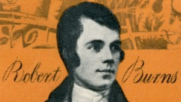

The many portraits of Robert Burns
SourceThis time of year is synonymous with haggis, poetry and the noble face of Rabbie Burns, as people across the globe celebrate the life and works of the Scottish bard. Here are the rare portraits painted during his lifetime, and the artworks they continue to inspire over 200 years later.

UK postage stamp depicting Robert Burns | Photo: StampCollection / Alamy Stock Photo
The best known and most produced image of Robert Burns was painted by the artist Alexander Nasmyth. He painted several portraits where the poet is shown in profile,
looking off to his right and is fashionably dressed against a rural landscape, evoking his upbringing in Ayrshire.
The artwork was commissioned by publisher William Creech when Burns first visited Edinburgh in 1786.
It was for a new edition of Burns' poems titled Poems, Chiefly in the Scottish Dialect.
Portraits of the bard created by Nasmyth can be seen in Glasgow’s Kelvingrove Musuem and Art Gallery, Edinburgh’s Scottish National Portrait Gallery
and London’s National Portrait Gallery.
Other artists would use Nasmyth's portraits of Burns as inspiration, creating their own takes on the classic portrait.